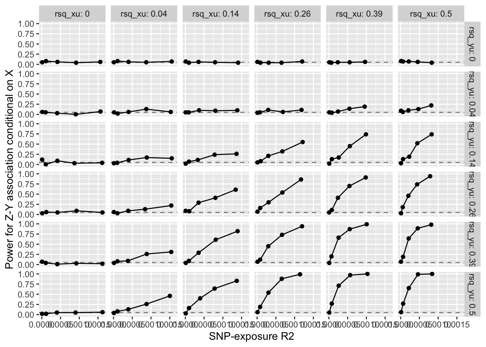

A tempting solution to the pleiotropy problem in MR is to check if the instrument associates with the outcome conditioning on the exposure. Under the assumption that X and Y are confounded, this opens a collider path to Y. Meaning that by default we expect the instrument to associate with the outcome conditional on the exposure. This is a problem because it means that we cannot use this as a test for pleiotropy.
This simulation examines how sensitive the association between the instrument and outcome is to conditioning on the exposure. The simulation is based on a simple model where X and Y are confounded by U, and the instrument Z is associated with X but not Y. i.e. There is no pleiotropy - so any association between Z and Y conditional on X is due to the collider path, and will lead to erroneously disgarding the instrument.
Simulation
library(tidyverse)
── Attaching core tidyverse packages ──────────────────────── tidyverse 2.0.0 ──
✔ dplyr 1.2.1 ✔ readr 2.2.0
✔ forcats 1.0.1 ✔ stringr 1.6.0
✔ ggplot2 4.0.3 ✔ tibble 3.3.1
✔ lubridate 1.9.5 ✔ tidyr 1.3.2
✔ purrr 1.2.2
── Conflicts ────────────────────────────────────────── tidyverse_conflicts() ──
✖ dplyr::filter() masks stats::filter()
✖ dplyr::lag() masks stats::lag()
ℹ Use the conflicted package (<http://conflicted.r-lib.org/>) to force all conflicts to become errors
library(furrr)
Loading required package: future
library(here)
here() starts at /Users/gh13047/repo/lab-book
fast_assoc <-function(y, x){ index <-is.finite(y) &is.finite(x) n <-sum(index) y <- y[index] x <- x[index] vx <-var(x) bhat <- stats::cov(y, x) / vx ahat <-mean(y) - bhat *mean(x)# fitted <- ahat + x * bhat# residuals <- y - fitted# SSR <- sum((residuals - mean(residuals))^2)# SSF <- sum((fitted - mean(fitted))^2) rsq <- (bhat * vx)^2/ (vx *var(y)) fval <- rsq * (n-2) / (1-rsq) tval <-sqrt(fval) se <-abs(bhat / tval)# Fval <- (SSF) / (SSR/(n-2))# pval <- pf(Fval, 1, n-2, lowe=F) p <- stats::pf(fval, 1, n-2, lower.tail=FALSE)return(list(ahat=ahat, bhat=bhat, se=se, fval=fval, pval=p, n=n ))}make_dat <-function(n=1000, bxy=0.5, bxz=0.5, byu=0.5, bxu=0.5){ u <-rnorm(n) z <-rnorm(n) x <- bxz * z + bxu * u +rnorm(n) y <- bxy * x + byu * u +rnorm(n) dat <-data.frame(u=u, z=z, x=x, y=y)return(dat)}estimation <-function(dat){# estimate the association between Z and Y res1 <-fast_assoc(dat$y, dat$z) res2 <-fast_assoc(dat$x, dat$z)# estimate the association between Z and Y conditional on X res2 <-fast_assoc(lm(y ~ x, data=dat)$residuals, dat$z)tibble(rsq_xy=cor(dat$x, dat$y)^2,rsq_xz=cor(dat$x, dat$z)^2,rsq_yz=cor(dat$y, dat$z)^2,rsq_yu=cor(dat$y, dat$u)^2,rsq_xu=cor(dat$x, dat$u)^2,pval_xz=res1$pval,fval=res1$fval,pval=res1$pval,pval_cond=res2$pval )}sim <-function(n=1000, bxy=0.5, bxz=0.5, byu=0.5, bxu=0.5){ dat <-make_dat(n=n, bxy=bxy, bxz=bxz, byu=byu, bxu=bxu) res <-estimation(dat)return(res)}sim(n=100000, bxy=0.5, bxz=0.2, byu=0.5, bxu=0.5)
`summarise()` has regrouped the output.
ℹ Summaries were computed grouped by bxz, rsq_yu, and rsq_xu.
ℹ Output is grouped by bxz and rsq_yu.
ℹ Use `summarise(.groups = "drop_last")` to silence this message.
ℹ Use `summarise(.by = c(bxz, rsq_yu, rsq_xu))` for per-operation grouping
(`?dplyr::dplyr_by`) instead.
ggplot(sumres, aes(x=mean_rsq_xz, y=pow_cond)) +geom_point() +geom_line() +labs(x="SNP-exposure R2", y="Power for Z-Y association conditional on X") +geom_hline(yintercept=0.05, linetype="dashed", alpha=0.5) +facet_grid(rsq_yu ~ rsq_xu, labeller = label_both)

What if we have lots of instruments?
Is there a constant collider bias, meaning that all residual effects of instrument on Y will be the same + horizontal pleiotropy?
gwas <-function(z, y) {for(i in1:ncol(z)) { Z <-as.numeric(unlist(z[,i])) res <-fast_assoc(y, Z)if (i ==1) { out <-as_tibble(res) %>%mutate(snp=i) } else { out <-bind_rows(out, as_tibble(res) %>%mutate(snp=i)) } }return(out)}make_dat <-function(params){ nsnp <- params$nsnp prop_pleio <- params$prop_pleio n <- params$n bxy <- params$bxy bxz <- params$bxz byu <- params$byu bxu <- params$bxu bzx <- params$bzx bzy <- params$bzy u <-rnorm(n) z <-matrix(rnorm(n * nsnp), nrow=n, ncol=nsnp) zx <- z %*% bzx %>% drop zy <- z %*% bzy %>% drop x <- bxz * zx + bxu * u +rnorm(n) y <- bxy * x + zy + byu * u +rnorm(n) z <-as.data.frame(z)names(z) <-paste0("z", 1:nsnp) dat <-tibble(u=u, x=x, y=y) %>%bind_cols(z)return(dat)}make_params <-function(nsnp=100, prop_pleio=0.5, n=1000, bxy=0.5, bxz=0.5, byu=0.5, bxu=0.5) { bzx <-rnorm(nsnp, 0, 0.1) bzy <-rnorm(nsnp, 0, 0.1) *sample(c(0,1), nsnp, replace=TRUE, prob=c(1-prop_pleio, prop_pleio))list(nsnp=nsnp,prop_pleio=prop_pleio,n=n,bxy=bxy,bxz=bxz,byu=byu,bxu=bxu,bzx=bzx,bzy=bzy )}estimation <-function(dat){# estimate the association between Z and Y# res1 <- gwas(dat[,4:ncol(dat)], dat$y)# res2 <- gwas(dat[,4:ncol(dat)], dat$x)# estimate the association between Z and Y conditional on X res3 <-gwas(dat[,4:ncol(dat)], lm(y ~ x, data=dat)$residuals)return(res3)bind_rows( res1 %>%mutate(type="Z-Y"), res2 %>%mutate(type="Z-X"), res3 %>%mutate(type="Z-Y|X") )}
p <-make_params(n=100000)dat <-make_dat(p)res <-estimation(dat)plot(res$bhat ~ p$bzy)
In MR there is a question of how much horizontal pleiotropy is going to bias the IV estimate. I am starting to have the opinion that when you have a large number of SNPs, there are two classes of pleiotropy to be concerned about. 1) The SNP impacts Y through multiple independent paths, i.e. it is biologically complex; 2) The SNP more influences a confounder of X and Y, and arises as an instrument for Y.
One way to estimate the extent of (1) happening, would be to test if SNPs associate with Y conditional on X. A big problem with this approach is that X and Y are typically confounded, so conditioning on X will induce an association between the SNP and Y through the backdoor path via the confounder. But this bias would be a constant bias * the bgx effect, so it could be possible to (a) determine the extent of confounding and (b) determine the extent of deviation of all SNPs from the expected collider effect.